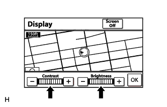
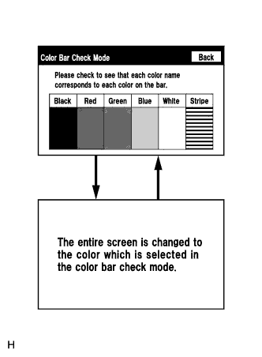

СИСТЕМА НАВИГАЦИИ (для моделей с жестким диском) > Мигание экрана или искажение цветов |
| 1.ПРОВЕРЬТЕ НАСТРОЙКИ ДИСПЛЕЯ |
|  |
Откройте окно настройки дисплея, нажав кнопку "DISP".
Сбросьте настройки дисплея (контраст и яркость) и проверьте, нормально ли выглядит изображение на экране.
|
| ||||
| OK | ||
| ||
| 2.ПРОВЕРЬТЕ ТЕМПЕРАТУРУ В САЛОНЕ |
Убедитесь в том, что температура внутри салона превышает -20°C (-4,0°F).
|
| ||||
| OK | |
| 3.ПРОВЕРКА ЦВЕТОВЫХ ПОЛОС |
|  |
Войдите в режим "Display Check" (проверка дисплея) и выберите пункт "Color Bar Check" (проверка цветовой полосы) (Нажмите здесь).
Убедитесь в том, что цветовые полосы соответствуют отображаемым названиям цветов.
|
| ||||
| OK | ||
| ||